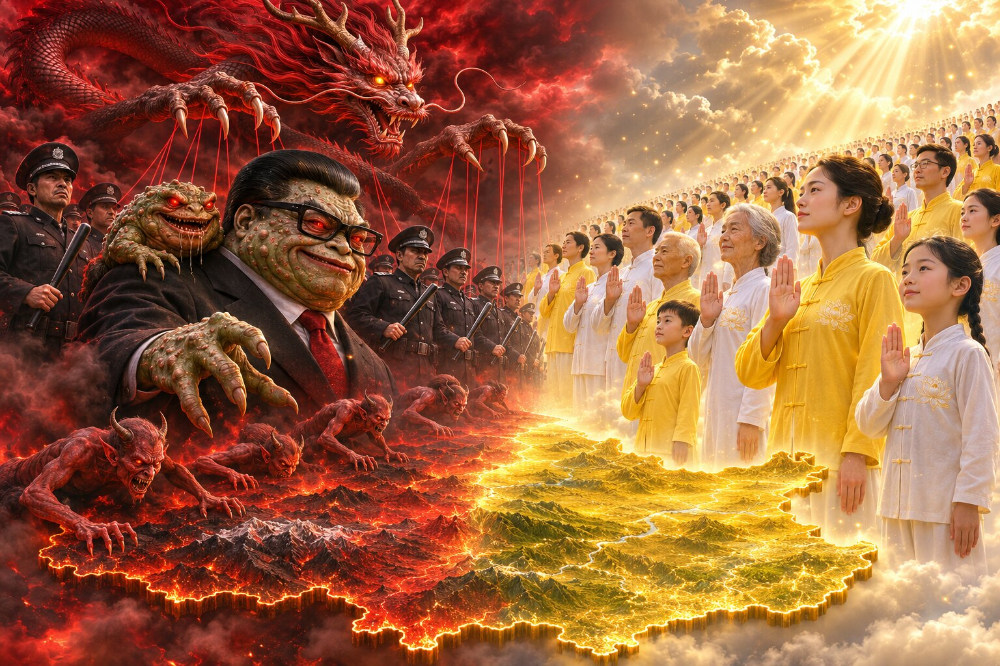

實境擴增場域座標系統

大法弟子 迫害元兇 癩蝦蟆精 610 辦公室 地獄小鬼 邪龍這是一段真實故事。
1999 年 7 月 20 日，
中共開始迫害法輪功學員。
一億的大法弟子
面對殘酷的鎮壓，
大善大忍的胸懷，
令人感佩。
然而，這場迫害的背後，
卻是一隻邪龍
在控制著這場迫害。
勇者啊，
你是否願意拿起滅邪之劍，
幫助大法弟子，
一起將赤龍斬除？
配樂：管樂合奏《不良思緒漸漸散去》（Bad Thoughts Fade Away） 作曲：Peter Bruno
音樂來源：正見網・天音網 正見網版權所有 ©1999-2026 ZHENGJIAN.ORG
看完故事，你的血量提升為 425
赤龍斬行動 作戰須知
故事配樂：管樂合奏《不良思緒漸漸散去》（Bad Thoughts Fade Away），作曲 Peter Bruno，取自 正見網・天音網，正見網版權所有 ©1999-2026 ZHENGJIAN.ORG。
戰鬥配樂：原創武俠風戰鬥曲（笛子、琵琶、二胡、弦樂、戰鼓），本遊戲專用。
AR 需要 Android 手機的 Chrome，並安裝「Google Play Services for AR」。iPhone 的瀏覽器目前不支援網頁 AR，只能用模擬場景試玩。